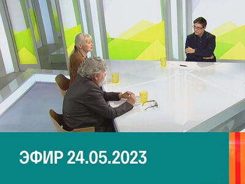
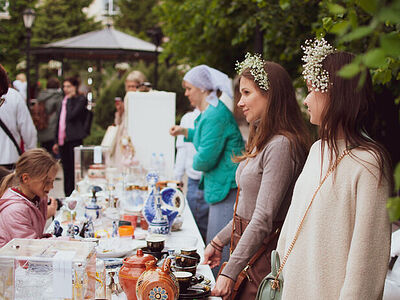
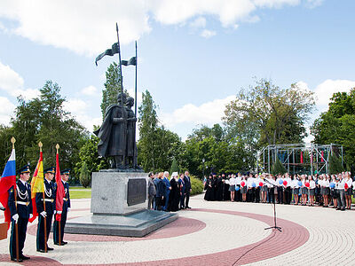
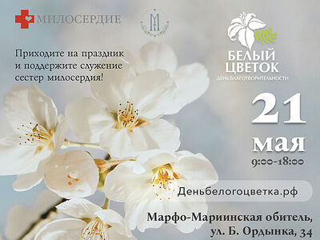
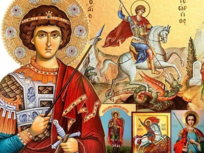

«Я не стыжусь благовествования Христова, потому что оно есть сила Божия ко спасению всякому верующему, во-первых, Иудею, потом и Еллину».
| Главная | |||
|---|---|---|---|
| Новости и события | Для саморазвития |
Термины |
Техническая информация |
Архив новостей |
Новости и события за Май
 25 мая 2023 г. НА ТЕЛЕКАНАЛЕ «КУЛЬТУРА» ВЫШЛА ПРОГРАММА, ПОСВЯЩЕННАЯ ПАТРИАРШЕЙ ЛИТЕРАТУРНОЙ ПРЕМИИ 24 мая 2023 года на телеканале «Культура» вышла программа «Наблюдатель» с участием лауреатов Патриаршей литературной премии Олеси Николаевой, Владимира Малягина и Константина Ковалева-Случевского. Программа была приурочена к Дню славянской письменности и культуры, который отмечается 24 мая. В ходе программы писатели кратко представили свои основные произведения, поделились взглядом на современную литературу, обменялись мнениями о смысле творчества и рассказали о значении Патриаршей литературной премии имени равноапостольных Кирилла и Мефодия.  23 мая 2023 г. 21 мая 2023 года в саду Марфо-Мариинской обители милосердия на Большой Ордынке в Москве состоялся благотворительный праздник «Белый цветок». Средства, собранные в ходе благотворительного мероприятия, будут направлены на оплату работы сестер милосердия, ухаживающих за тяжелобольными одинокими людьми в больницах и на дому. «На праздник пришло около 5000 человек, каждый участник внес свой посильный вклад, а в итоге у нас получилась большая сумма, которая будет направлена на организацию ухода за тяжелобольными людьми. Мы очень благодарны всем. Уверена, что мы смогли подарить в этот весенний день радость и хорошее настроение», — рассказала директор по развитию Православной службы помощи «Милосердие» Владлена Калашникова. В России праздник «Белый цветок» впервые провели в 1911 году при активном участии царской семьи. В 2011 году праздник был возрожден в Москве Православной службой помощи «Милосердие». Крупнейшая православная социальная служба в России — служба помощи «Милосердие» — более 30 лет помогает детям-сиротам, людям с инвалидностью, одиноким старикам, бездомным и беременным женщинам, оказавшимся без крыши над головой. В настоящее время служба объединяет 25 проектов помощи, почти в каждом из них трудятся сестры милосердия, которые стояли у истоков создания Православной службы «Милосердие».  21 мая 2023 г. 15 мая, в день памяти небесных покровителей города Борисоглебска – святых благоверных князей Бориса и Глеба, Архипастыри Воронежской митрополии: митрополит Воронежский и Лискинский Сергий, епископ Борисоглебский и Бутурлиновский Сергий и епископ Россошанский и Острогожский Дионисий приняли участие в торжественной церемонии открытия праздничной программы, посвященной 325-летнему юбилею, со дня основания города Борисоглебска, которая состоялась на Старособорной площади, при храме во имя святых благоверных князей Бориса и Глеба. Праздничную программу открыл торжественный марш, под сопровождение барабанной дроби, воспитанников Борисоглебского кадетского корпуса. В ходе мероприятия Глава Воронежской митрополии - митрополит Воронежский и Лискинский Сергий, обратился к жителям города и присутствующим гостям со словами поздравлений и архипастырского назидания. Завершая праздничное мероприятие, посвященное 325-летнему юбилею, со дня основания города Борисоглебска, прозвучал гимн, в исполнении вокального ансамбля «Мы Борисоглебцы».  15 мая 2023 г. 21 мая 2023 года в саду Марфо-Мариинской обители милосердия на Большой Ордынке в Москве пройдет ставший традиционным благотворительный праздник «Белый цветок». Все собранные средства будут направлены на работу сестер милосердия, которые ухаживают за тяжелобольными одинокими людьми в больницах и на дому, подопечными православной службы помощи «Милосердие». Дополнительная информация публикуется на сайте мероприятия. Праздник «Белый цветок» состоится 21 мая с 8.30 до 17.00 по адресу: г. Москва, Марфо-Мариинская обитель, ул. Большая Ордынка, д. 34. Вход свободный. Первые в истории России «Дни цветков» прошли в 1911-1914 годах — их организовала в пользу туберкулезных больных императрица Александра Федоровна. В советские годы традиция была прервана, однако возродилась в 90-е годы XX века в различных городах России. В Москве «Белый цветок» с 2011 года проводит православная служба помощи «Милосердие». Крупнейшая православная социальная служба в России — служба помощи «Милосердие» — более 30 лет помогает детям-сиротам, людям с инвалидностью, одиноким пожилым, бездомным и беременным женщинам, оказавшимся без крыши над головой. Сейчас в рамках службы действуют 25 проектов помощи, почти в каждом из них трудятся сестры милосердия, которые стояли у истоков создания православной службы «Милосердие».  5 мая 2023 г. С мая по сентябрь 2023 года по благословению Святейшего Патриарха Московского и всея Руси Кирилла в 100 городов России будет принесен ковчег с мощами великомученика Георгия Победоносца. К принесению из Свято-Троицкой Сергиевой лавры ковчега с частицей мощей великомученика Георгия Победоносца во всех городах будет приурочено совершение молебнов о победе. Мощи небесного покровителя Русского воинства будут доставлены во все 89 регионов (субъектов) Российской Федерации. Мероприятие будет носить всероссийский характер. Принесение мощей великомученика Георгия Победоносца в города России начнется 6 мая после Патриаршего богослужения в московском Георгиевском храме на Поклонной горе. Принесение мощей великомученика Георгия Победоносца осуществляется Комиссией Русской Православной Церкви по развитию паломничества и принесению святынь при содействии руководства регионов России, организационной поддержке поддержке Всемирного русского народного собора и генеральном информационном партнерстве телеканала «Царьград». Принесение мощей великомученика Георгия Победоносца завершится в конце сентября 2023 года. Параллельно с ним в ряде регионов будут проходить форумы ВРНС. Итоговые видеоматериалы на основе наиболее ярких моментов форумов ВРНС и молебна будут продемонстрированы на юбилейном XXV Всемирном русском народном соборе в Московском Кремле. |
НАШИ ТЕЛЕФОНЫ: 1. 8-800-000-00 2. 00-00-01 |
|